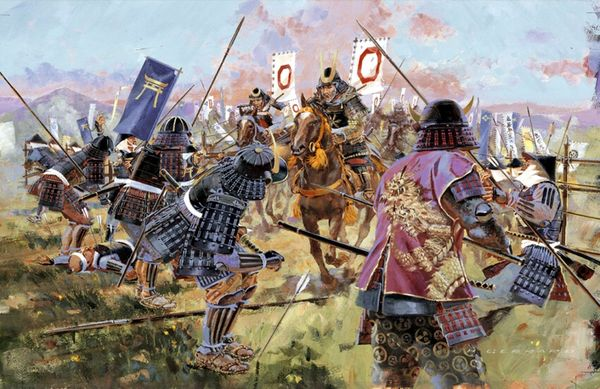

Contexto Histórico
La era Sengoku surgió como resultado del declive del shogunato Ashikaga, que había perdido su autoridad sobre los daimyos (señores feudales) regionales. La falta de un poder centralizado llevó a un período de conflictos constantes entre clanes rivales por el control del país. Las rivalidades internas, combinadas con las tensiones sociales y económicas, dieron lugar a un estado de guerra constante.
Ilustración campo de batalla Era Sengoku
Fragmentación del poder
Durante la era Sengoku, Japón se dividió en numerosos dominios gobernados por daimyos poderosos, quienes luchaban entre sí por el control territorial y político. Estos daimyos mantenían ejércitos privados de samuráis y formaban alianzas cambiantes según sus intereses. Entre los clanes más destacados estaban los Oda, los Toyotomi y los Tokugawa.

Ilustración de batallas libradas durante la Era Sengoku
Auge de los grandes lideres
La era Sengoku fue testigo del surgimiento de líderes militares excepcionales que buscaron unificar Japón bajo su dominio. Oda Nobunaga fue uno de los primeros en emprender esta empresa, utilizando tácticas militares innovadoras y estrategias políticas astutas para expandir su influencia. Su sucesor, Toyotomi Hideyoshi, continuó esta labor y logró unificar gran parte del país.

Oda Nobunaga - Líder militar Era Sengoku
Batallas decisivas
Las batallas eran una característica distintiva de la era Sengoku, y muchas de ellas fueron decisivas para determinar el curso de la historia japonesa. Ejemplos notables incluyen la Batalla de Okehazama (1560), donde Oda Nobunaga derrotó a un ejército mucho más grande liderado por Imagawa Yoshimoto, y la Batalla de Sekigahara (1600), que consolidó el poder de Tokugawa Ieyasu como el último shogun.
Ilustración de la Batalla de Okehazama - Era Sengoku 1560
Cambios sociales y culturales
A pesar del caos y la violencia, la era Sengoku también fue un período de innovación y cambio social. El aumento de la movilidad social permitió que individuos talentosos ascendieran en la jerarquía, independientemente de su origen. Además, la demanda de estrategas militares hábiles impulsó el desarrollo de nuevas escuelas de pensamiento, como la estrategia militar de Sun Tzu.
Ilustración del shogunato Tokugawa - 1603 - 1868
Legado de la Era Sengoku
La era Sengoku llegó a su fin con la unificación de Japón bajo el shogunato Tokugawa. Este período de paz relativa, conocido como el período Edo, trajo estabilidad política y prosperidad económica al país, pero también marcó el comienzo de un largo período de aislamiento internacional. Sin embargo, el legado de la era Sengoku perduró en la memoria nacional japonesa, alimentando la mitología y la cultura del país hasta nuestros días.